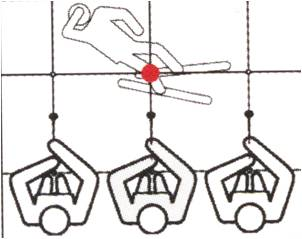
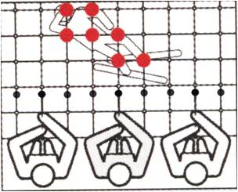
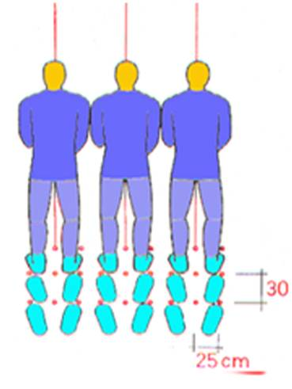
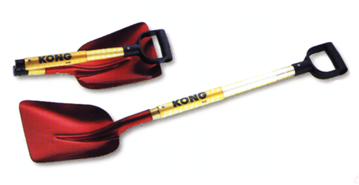
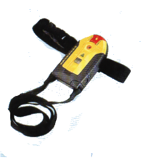
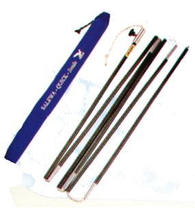

ASOCIATIA NATIONALA A SALVATORILOR MONTANI DIN ROMANIA
PROCEDURI ȘI TEHNICI DE BAZĂ ÎN SALVAREA MONTANĂ
Avalansa
Avalansele nu sunt fenomene intamplatoare, ele au loc aproape cu regularitate in toti muntii, astfel incat pot fi numite fenomene normale. In regiunile de mare altitudine, temperatura se mentine multa vreme sub zero grade, zapada nu se poate acumula la nesfarsit, pentru ca intervin numeroase cauze care forteaza straturile de zapada sa cada brusc sau sa alunece lent in vai. ACEST FENOMEN ESTE NUMIT AVALANSA.
10.1 UNDE NU SE FORMEAZA AVALANSELE?
Avalansele au regiunile lor favorite. Astfel, ele nu se formeaza in urmatoarele locuri:
a - pe platourile sau pantele cu o inclinare mai mica de 25 grade, unde zapada se topeste pe loc.
b - pe locurile rapoase cu o inclinare mai mare de 45 grade, unde zapada nu se poate acumula in cantitate mare deoarece aluneca in vale in timpul ninsorii c -pe pantele impadurite pana sus pe culme.
10.2 LOCURILE UNDE SE FORMEAZA AVALANSELE:
a - pe pantele ierboase sau cu grohotisuri cu inclinare cuprinsa intre 25-35 grade.
b - pe pantele abrupte, cu inclinare mare, dar care au trepte sau platforme de depozitare a zapezii (tipul avalanselor de cataracta).
c - peretii aproape verticali, opusi directiei dominante a vantului si care formeaza cornise sau balcoane de zapada in creasta.
d - pantele care au un culoar, o vale mediana
e - pantele lipsite de paduri sau jneapan.
10.3 CAUZELE CARE PRODUC AVALANSELE:
Principalele cauze care produc avalanse sunt:
- inclinarea terenului:.
- cantitatea mare de zapada urca cu mult de la sol, centrul de greutate al stratului aducandu-l in echilibru instabil.
- temperatura solului, topind baza paturii de zapada o desprinde de pamant, facand - o sa alunece pe un strat mobil de apa.
- vantul prin presiunea sa, da un impuls stratului de zapada ce se afla in echilibru.
- lipsa de coeziune dintre cristalele ce formeaza patura de zapada.
- lipsa de sudura dintre paturile de zapada cu vechimi diferite face ca un strat sa alunece pe celalalt
- cutremurele de pamant.
- miscarile straine, ca rostogolirea unei stanci, tipetele turistilor, trecerea unui turist sau detunaturile armelor de foc, etc., sunt cauze care scot stratul de zapada din repaus, punandu-l in miscare.
10.4 CLASIFICAREA AVALANSELOR
Dupa forma si modul cum iau nastere avalansele se impart in cinci grupe:
10.4.1 Avalanse de ninsoare afanata.
Ele se produc de cele mai multe ori chiar in timpul ninsorilor abundente, acestea cazand peste o patura veche de zapada, pe o panta inclinata intre 25-35 grade, formand un strat gros care incepe sa alunece la vale prin presiunea propriei greutati. Cristalele de ghiata nefiind legate intre ele, zapada se prabuseste ca o masa de pulbere. Acest tip de avalansa este cel mai periculos, atat prin efectele distructive, cat si prin faptul ca se produce subit, prabusindu-se rapid si este greu de prevazut locul si momentul cand se va declansa. Ele se produc in tot cursul iernii. Turistul prins in asemenea avalanse poate scapa protejandu-si pieptul , (lipind coatele de coapse cat mai mult, straduindu-se sa nu inspire pe nas si pe gura zapada, exercitand miscari de inot, aruncand rucsacul), evitarea lor e insa cea mai sigura scapare.
10.4.2 AVALANSELE DE FUND SAU COMPACTE (AVALANSE DE PRIMAVARA).
Aceste avalanse sunt frecvente in perioadele calde ale iernii sau primavara, cand incepe topirea zapezilor. Pamantul incalzit de razele solare comunica zapezii caldura sa, topind zapada de jos in sus. Apa formata sub stratul de zapada sau infiltrarea apei de ploaie sub zapada, topeste legaturile zapezii cu solul, detasand zapada superioara in placi enorme care aluneca in bloc pe inclinarea pantei.
Zapada acestor avalanse este uda si grea, lipsita de aer, turistul prins de aceasta avalansa este pierdut. Desi aceste avalanse sunt foarte puternice sunt mai putin periculoase dacat avalansele afanate, deoarece sunt mai usor de prevazut .Ele se produc numai atunci cand temperatura aerului in decurs de cateva zile este deasupra de zero grade, intre orele 9-12, pe pantele care sunt orientate spre est; intre orele 14-18 pe pantele orientate spre vest; intre orele 18-24 pe versantele ce privesc spre nord. In momentul declansarii sunt insotite de pocnituri puternice si de un vuiet care se transmite la mare distanta. In aceste cazuri este de preferat sa se fuga pe una din crestele laterale a vaii.
10.4.3 AVALANSE IN SCANDURI DE ZAPADA.
Acest tip de avalansa se formeaza de obicei pe terenuri cu inclinare mica, fiind determinata de straturile de zapada diferite suprapuse ca niste scanduri in panta. In general, prima zapada se prinde de sol, vantul o netezeste la suprafata si o indeasa, iar temperatura mai ridicata o face, prin inghetare, mai compacta, mai dura. Peste patura de zapada presata se depune de multe ori un strat de zapada grunturoasa, mobila fara aderenta, care numai la suprafata prinde in bataia razelor solare o crusta subtire. Pe acest strat poate cadea o zapada formata din fulgi sau mazariche moale care presata de vant, formeaza un alt strat compact si dur ca o scandura; peste acest srat se suprapune un nou strat de zapada afanata. Cand stratul de zapada grunturoasa se indeasa sau se strange in vreo vagauna, se formeaza goluri mari intre el si stratul dens de deasupra; acesta se rupe cand este prea gros prin propria lor greutate, sau cand este presata de schiori sau animale. Odata rupta, scandura de zapada porneste la vale, alunecand pe stratul grunturos, ca pe niste rulmenti. Ea pune in miscare zapada de pe suprafete mari. Acest tip de avalansa porneste cu un trasnet puternic, cel mai bun avertisment de a parasi zona.
10.4.4 AVALANSA IN BULGARI DE ZAPADA ( DE CATARACTA ).
Este avalansa tipica de primavara sau chiar vara. Ea se produce in galeriile cu pereti abrupti sau in hornuri pe peretii carora sunt numeroase platforme pe care se depoziteaza zapada. In general primavara, cand incepe dezghetul, blocurile de ghiata aluneca de pe o platforma pe alta, sfaramandu-se in bulgari care cad la piciorul muntelui. Aceste avalanse sunt intalnite in galeriile sapate in versantul nordic al muntilor si cad in zilele calduroase la apusul si dupa apusul soarelui.
10.4.5. AVALANSA IN CORNISA SAU BALCOANE.
Aceste avalanse se produc atat iarna cat si primavara. Primavara, cand stanca de care este prinsa cornisa se incalzeste, intreaga platforma suspendata se prabuseste. Iarna, cand viscolul ingramadeste multa zapada la capatul liber al balconului de gheata, legatura cu peretele nu-l poate sustine(din cauza greutatii) si cade in gol.. Cornisele sau balcoanele se formeaza totdeauna pe peretele opus directiei din care sufla vantul; ele sunt uneori atat de dezvoltate, incat la marginea crestei formeaza adevarate platouri, iar in vale niste tuneluri sparte.
10.5. CLASIFICAREA INTERNATIONALA A AVALANSELOR.
10.5.1 PRINCIPII DE CLASIFICARE A AVALANSELOR
TABLOU PRACTIC: clasificarea permite utilizatorului descrierea unei avalanse observata sau prevazuta in termeni simpli.
previziunea avalansei
operatii de salvare
actiunile de sine, sunt usurate de limbajul comun.
CODUL DE CLASIFICARE MORFOLOGICA este o notatie prescurtata, particulara utila pentru a transmite observatii.
SCHEMA GENERALA DE CLASIFICARE
|
FAPTE CARE PRODUC |
caracteristici descriptive |
|
FENOMENUL DE |
tipul avalansei |
|
AVALANSA |
clasificare morfologica |
|
|
caracteristici masurabile (cantitative) |
|
|
efectele avalansei (daune, victime) |
|
|
conditii |
|
CONDITIILE GENETICE |
de teren |
|
DE FORMARE |
stratificare zapezii |
|
A AVALANSEI |
conditii meteorologice (recente si prezente) |
|
|
mecanisme de declansare (tip) |
|
|
clasificare genetica (a factorului de avalansa) |
10.5.2. CLASIFICAREA MORFOLOGICA A AVALANSELOR
SCHEME DE CLASIFICARE
|
ZONA |
CRITERII |
CARACTERE DISTINCTIVE, DENUMIRE, COD |
|
ZONA |
A. MOD DE PORNIRE |
A.1 plecare dintr-un punct (avalansa fara coeziune) A.2 plecare de pe o linie (avalansa de placi) A.3 placa usoara A.4 placa dura |
|
DE ORIGINE |
B. POZITIA PLANULUI DE ALUNECARE |
B.1 interiorul stratului de zapada (avalansa superficiala) B.2 ruptura de zapada proaspata B.3 ruptura de zapada veche B.4 avalansa de profunzime (de fond, totala) |
|
|
C. APA LIBERA IN ZAPADA |
C.1 absenta (avalansa de zapada uscata) C.2 prezenta (avalansa de zapada umeda) |
|
ZONA DE TRANZITIE |
D. TRASEUL DE PARCURS |
D.1 parcurs pe o panta deschisa (avalansa de versant) D.2 parcurs de culoar sau stramtoare (avalansa de coridor) |
|
|
E. FORMA DE DEPLASARE |
E.1 nori de praf si zapada (avalansa de zapada pulver) E.2 alunecare totala (avalansa curgatoare) |
|
ZONA |
F. RUGOZITATEA SUPRAFETEI DE DEPOZIT |
F.1 grosiera (depozitare grosiera) F.2 blocuri angulare F.3 bulgari F.4 depozit fin (pulveri) |
|
DE |
G. APA INTRE STRATURILE DE ZAPADA IN MOMENTUL DEPOZITARII |
G.1 absenta (depozit sec) G.2 prezenta (depozit umed) |
|
DEPOZIT |
H. GRADUL DE CONTAMINARE A DEPOZITULUI |
H.1 fara alte materiale vizibile (avalansa curata) H.2 contaminare vizibila (avalansa contaminata) H.3 cu pietre si soluri H.4 cu ramuri si copaci H.5 cu brescii |
|
|
J. MOD DE DECLANSARE |
J.1 naturala J.2 generata - accidental - voluntar |
10.5.3 COMENTARII ASUPRA CLASIFICARII MORFOLOGICE.
DEFINITIA ZONELOR
a. Zona de pornire:
- zona in care existenta unei avalanse se manifesta prin modul sau de pornire.
- pentru avalansa de placa cuprinde distanta pana la linia de ruptura la presiune
- pentru avalansa de zapada fara coeziune nu exista limite inferioare precise.
- in general distanta de 100 m include zonele de origine in cele mai multe cazuri.
b. Zona de tranzitie:
- alunecarea este independenta de modul de plecare, viteza poate fi crescatoare, stabila, descrescatoare.
- nu raman depozite de zapada dupa trecerea avalansei, exceptand zapada retinuta de rugozitatile terenului.
c. Zona de depozit:
- un depozit natural este produs prin pierderea energiei (fortei) induse de frecare
- o zona de depozit se poate intinde pe o larga gama de pante, inclusiv pe pante inverse.
- pozitia limitei sale cu zona de tranzitie poate varia considerabil de la o avalansa la alta, in acelasi culoar datorita stratului de zapada (seaca, umeda, densa etc.)
- pentru avalansa pulver, zona de depozit este zona de sedimentare a norilor de zapada.
CRITERII SI CARACTERISTICI ALTERNATIVE.
GENERALITATI
Literele majuscule atribuite criteriilor in combinatie cu cifrele indica caracterul distinctiv. Pot fi utilizate ca un cod de transmitere si inregistrare de date.
COMENTARII DETAILATE.
a. Modalitatea de declansare
Avalansa de zapada afanata. Punctul de pornire poate fi determinat de caderea unui obiect (piatra, fragment de gheata etc.), sau a unui schior. In ultimul caz, mecanismul fracturii nu poate fi precizat, dat fiind ca se pleaca de la un punct.
Avalansa de placa. Pornind de la o linie, nu vom exclude si posibilitatea propagarii miscarii pe o fractura invizibila, a carei declansare poate fi produsa intr-un singur punct. Termenul de placa este deseori utilizat ca sinonim pentru avalansa de placa, insa trebuie evitat atunci cand pot exista dubii in ceea ce priveste utilizarea corecta. Se impune o distinctie intre placa moale si cea dura: intr-o placa moale, stratul de zapada faramitata este moale sau foarte moale, (placa se sfarama intr-un material lipsit de coeziune, imediat dupa pornirea avalansei); intr-o placa tare, dura, stratul de zapada faramitata este tare, foarte tare si extrem de tare (bucati, sau blocuri angulare de zapada sunt transportate pe distante mai lungi, in functie de rugozitatea traseului parcurs). Fractura de placa poate fi observata fara a fi neaparat urmata de o avalansa, deseori fiind insa insotita de o miscare inceata de alunecare a zapezii umede. Dar atunci cand aceasta miscare este sporita de topirea partiala a zapezii, miscarea de alunecare se poate transforma in avalansa. Acest proces este desemnat prin termenul de “avalansa de alunecare”.
b. Pozitia planului de alunecare.
In stratul de zapada. Zapada proaspata, in ceea ce priveste “fractura de zapada proaspata”, inseamna un strat uniform, depus mai mult sau mai putin continu, in decursul a 5 zile premergatoare avalansei si care nu implica un tip de zapada granulara. O fractura de zapada proaspata este prezenta chiar daca starea suprafetei stratului imediat inferior (de zapada mai veche) a favorizat aceasta fractura (de exemplu crusta de gheata, suprafata afanata, etc.). Planul de alunecare al unei fracturi de zapada veche rezida in stratul respectiv, de zapada veche (mai veche de 5 zile), contribuind la avalansa prin linia sa de fractura. Nu este relevant daca zapada unei avalanse este proaspata, sau daca greutatea acesteia a cauzat de fapt fractura.
Direct pe suprafata de contact cu terenul. Chiar daca dupa producerea avalansei, raman in urma petece de zapada, sau un strat subtire, datorita asperitatilor ori neregularitatilor de teren, putem totusi avea in vedere o avalansa de profunzime.
c. Apa libera in zapada in zona fracturii.
Avalansa de zapada umeda, implica prezenta apei in intregul strat de zapada, altminteri avalansa este considerata uscata sau mixta. Deosebirea dintre acestea este greu de stabilit fara a lua in considerare conditiile meteorologice (temperatura, radiatie, ploaie).
Termenul clasic de avalansa pana la sol utilizat odinioara fie pentru avalansa de zapada umeda fie pentru avalansa de profunzime, este des utilizat pentru avalansele de primavara, grele si umede, care antreneaza mase intregi de roca si sol.
d. Forma traseului parcurs
Multe avalanse canalizate (de culoare, stramtoare), pornesc ca avalanse libere (necanalizate, de versant), fiind ulterior concentrate in unul sau mai multe culoare doar in zona inferioara a parcursului lor. Daca acest traseu este preponderent de culoar, deoarece deseori zona de fractura este in forma de palnie, atunci avalansa este considerata a fi canalizata, altminteri pentru intregul traseu se au in vedere tipuri mixte. Profilul longitudinal al unui traseu de avalansa este deseori foarte semnificativ (schimbari de unghiuri de inclinare, trepte intermediare, formatiuni de cascada, etc.). Descrierea cantitativa a profilului este in general superioara si mai usor de realizat decat o clasificare detailata a tuturor profilelor din teren.
e. Modalitatea de deplasare.
Nu se face nici un fel de distinctie intre miscarea alunecarii de translatie sau cea de curgere, rostogolire, diferentiata prin faramitare. In zona de plecare, miscarea urmareste intotdeauna terenul (avalansa de curgere). Foarte adesea se remarca tipuri mixte de avalansa cum ar fi “avalansa mixta de curgere si pulberi”, “avalansa de pulberi cu componente de curgere”, etc. Atunci cand miscarea se produce cu desprindere de la teren (fie de pulberi fie de scurgere), avalansa se numeste “cascada”. Atunci cand deplasarea se produce cu viteza mica (sub 1 cm/s) iar efectele dinamice sunt neglijabile, fenomenul nu va fi incadrat sau clasificat ca avalansa.
f. Rugozitatea suprafetei de depozit.
Un depozit este considerat ca fiind aspru, zgrunturos, daca marimea medie a bulgarilor, bucatilor, blocurilor de zapada si gheata este peste 30 cm., altminteri este fin. Blocurile angulare sunt bucati din depozitul initial de zapada, caracterizand astfel o fractura de placa tare ( dura ).Bulgarii rotunjiti sau cu un grad oarecare de rulare, includ si bucati neregulate.
g. Apa libera in zapada sfaramata.
Avalansele de amploare care sunt uscate in zona de plecare, pot colecta apa in zonele inferioare ale traseului lor, schimbandu-si astfel caracterul. Apa libera in zapada sfaramata conduce la depozite solide sau dure, aproape impenetrabile pentru aer, ceea ce constituie un factor important in operatiunea de salvare montana.
h. Contaminarea depozitelor.
Depozite cu zone separat distinct, curate si contaminate , sunt calificate ca “ mixte “. Pe langa o contaminare evidenta, aceste depozite pot contine si materiale mai putin vizibile de praf, particule organice, etc. Acestea nu sunt luate in considerare pentru clasificare. Unele depozite contin o proportie mare de roci sfaramate si sol. Daca ele sunt rezultatul alunecarilor de teren sau al inundatiilor nu vor fi considerate si depozite de avalansa chiar daca contin si zapada.
CODIFICAREA CLASIFICARII MORFOLOGICE.
NOTIUNI GENERALE
Simbolurile corespunzatoere criteriilor: majuscule
Simbolurile caracteristicilor: cifre
Semnificatia generala a cifrelor:
0: necunoscuta, lipsita de necesitate, lipsita de utilitate
1-6: caracteristici specifice
7-8: caracteristici mixte
9: observatii speciale, altele decat cele codificate
CODURILE CLASIFICARII MORFOLOGICE
|
CRITERII |
|
SIMBOLURI |
|
|
CARACTERISTICI |
CRITERIUL |
CARACTE |
RISTICI |
|
|
|
SPECIFICE |
MIXTE |
|
Modalitatea de producere |
A |
|
|
|
avalansa de tip zapada afanata |
|
1 |
7 |
|
avalansa de placa (in general) |
|
2 |
7 |
|
avalansa de placa moale |
|
3 |
|
|
avalansa de placa tare |
|
4 |
|
|
Pozitia suprafetei de alunecare |
B |
|
|
|
avalansa superficiala (in general) |
|
1 |
7 |
|
a.s. cu fractura in zapada proaspata |
|
2 |
7/8 |
|
a.s. cu fractura in zapada veche |
|
3 |
7/8 |
|
avalansa de profunzime |
|
4 |
7 |
|
Apa libera in zapada in zona fracturii |
C |
|
|
|
absenta (a. de zapada uscata) |
|
1 |
7 |
|
prezenta (a. de zapada umeda) |
|
2 |
7 |
|
Forma de relief a sup. de alunecare |
D |
|
|
|
avalansa necanalizata |
|
1 |
7 |
|
avalansa canalizata |
|
2 |
7 |
|
Forma de deplasare |
E |
|
|
|
de pulveri |
|
1 |
7 |
|
de alunecare totala |
|
2 |
7 |
|
Rugozitattea suprafetei de depozitare |
F |
|
|
|
depozit grosier |
|
1 |
7 |
|
d.g. din blocuri angulare |
|
2 |
7 |
|
d.g. din blocuri rotunjite |
|
3 |
7 |
|
depozit fin |
|
3 |
7 |
|
Apa libera in depozit |
G |
|
|
|
absenta: depozit uscat |
|
1 |
7 |
|
prezenta: (depozit umed) |
|
2 |
7 |
|
Gradul de contaminare a depozitului |
H |
|
|
|
depozit necontaminat (curat) |
|
1 |
7 |
|
depozit contaminat (in general) |
|
2 |
7 |
|
d.c. prin roci, sol , balastru |
|
3 |
8 |
|
d.c. prin ramuri, trunchiuri |
|
4 |
8 |
|
d.c. prin brecii |
|
5 |
|
|
Mecanismul de declansare* |
I |
|
|
|
producere naturala |
|
1 |
|
|
prod.datorata fantorului uman |
|
2 |
|
|
factor uman accidental |
|
3 |
|
|
factor unan voluntar |
|
4 |
|
* Acest criteriu este un element al clasificari genetice. Deoarece menanismul de declansare are cele doua alternative date este cunoscut in majoritatea cazurilor si este important prin implicatii, in elucidarea multor probleme. Acest mecanism este inclus in codul morfologic.
CLASIFICAREA GENETICA A AVALANSELOR.
NOTIUNI GENERALE
In sensul strict al cuvantului, o clasificare genetica a avalanselor ar trebui sa imparta avalansele conform originii acestora. Datorita faptului ca avalansele sunt rezultatul mai multor factori genetici care concura la producerea lor, o clasificare bazata pe un singur factor dominant, corespunzator fiecarei clase ar fi adecvata doar intr-un numar restrans de cazuri, cum ar fi avalansele legate doar de zapada proaspata, sau de vant, sau de temperatura ridicata ori de stratificare slaba. Prin urmare, s-a pornit de la o modalitate diferita de abordare, adica dinspre factorul genetic spre efectiv. O monitorizare a conditiilor pertinente a unei avalanse studiate, permite o analiza genetica si o clarificare a evenimentului. Mai mult, studiul acestor conditii usureaza evaluarea pericolului de avalansa inaintea evenimentelor reale si consumate, ceea ce, in anumite cazuri se poate concretiza intr-o prognoza cantitativa (statistica).
10.6. CLASIFICAREA FACTORILOR DE AVALANSA.
10.6.1. Factori permanenti
1 Altitudine relativa
- zona de creasta si platou inalt
- influenta puternica a vantului, cornisa, avalansa de placa localizata.
- zona sub limita padurii si sub creasta
- mari zone de formare a avalanselor de placa
- zona deasupra limitei padurii
- influenta redusa a vantului, mai putin avalanse de placa, doar tipul de placa moale.
2. Inclinare
- < 35° - posibilitate de formare a avalanselor fara coeziune
- < 25° - posibilitate de formare a avalanselor de placa
- < 15° - curgere de avalansa stationara sau accelerata
- < 20° - curgere intarziata in depozit, avalansa de zapada foarte uda; se produce si in pante foarte joase
3. Orientarea versantului
- Pozitia fata de soare - pante la umbra - avalansa de placa uscata
- panta la soare - avalansa de placa uda
- Pozitia fata de vant - pante supuse vantului - avalansa de placa
4. Configuratia terenului
- Pante deschise, uniforme - avalansa de versant
- Culoare si vai - avalansa de culoar, canalizate, rupturi de placa sau de zapada fara coeziune
- Trepte - avalanse de zapada pulver, sub forma de cascade
- Schimbari de panta - avalanse de zapada pulver, sub forma de cascade
5. Rugozitate
- Sol neted - zapada care aluneca pe sol umed da nastere la avalanse de fond
- Obstacole in relief - avalanse superficiale deasupra obstacolelor
- Vegetatia - iarba favorizeaza avalansele de fond si alunecarea
-arbustii reduc posibilitatea formarii avalanselor (daca nu sunt acoperiti de
zapada )
- padurea impiedica formarea avalanselor (daca este densa ).
10.6.2. Factori variabili
1 Conditii meteorologice recente ( 5 zile )
a - caderi de zapada
- zapada proaspata - cresterea greutatii, cresterea masei de joasa stabilitatea fiind cel mai important factor de avalansa.
- zapada pufoasa - avalansa fara coeziune (ninsoarea pufoasa favorizeaza avalansa coerenta de placa ).
- depunerile zilnice - instabilitatea creste cu grosimea stratului de zapada, ruptura in zapada veche sau proaspata.
- intensitatea caderii de zapada - instabilitate crescanda odata cu intensitatea zapezii, favorizand rupturi in zapada proaspata, fiind mare pericolul pe pante joase.
B - Ploaie
-favorizeaza avalanse de zapada uda fara coeziune sau avalanse de placa usoare, alunecari mixte de zapada si pamant.
C - Vant
-in functie de directie se formeaza acumulari locale de zapada, crescand fragilitatea zapezii, formatiunile de avalansa de placa fiind indreptate spre vant, luand nastere formatiunile de costisa.
D - Factori tehnici
- temperatura si retinerea de apa in zapada - cresterea temperaturii duce la declansarea avalanselor, iar scaderea temperaturii, la cresterea stabilitatii; retinerea apei ducand la formarea avalanselor.
- temperatura aerului - efectele sunt similare la toate tipurile de avalansa
- radiatia solara - influenteaza avalansele mai ales pe pantele expuse la soare.
- radiatia termica - racirea temperaturii zapezii la umbra si noaptea duce la formarea ghetii in profuzime si la suprafata.( stratificare )
2 - Stratul de zapada veche a suferit influenta conditiilor climatice, manifestate in intreg sezonul de iarna:
a - depunere totala de zapada - nu este un factor dominant pentru pericolul de avalansa, dar poate avea efect asupra masei ( avalansa de fond ) , prin tasarea si metamorfozarea stratului de zapada ( avalansa superficiala )
b - stratificare- ordinea de succesiune a rezistentei mecanice
- stratul superficial - stabilitatea depinde de stratul cel mai putin rezistent; lipsa de coeziune sau stratul de gheata de suprafata, fragilitatea sau rugozitatea fiind importante pentru caderile de zapada ulterioare
- interiorul mantalei de zapada - rupturi in zapada veche cauzate de nivele intermediare putin rezistente si de gheata de adancime
3 - Mecanisme de declansare
a - declansare naturala- cauzata de factori interni avand ca efect avalansele naturale, spontane
- cauzata de factori externi, non uman avand ca efect avalanse naturale b - declasare antropica ( factor uman )
-declansare accidentala
-declansare voluntara ( artificiala )
COMENTARII.
-Altitudinea relativa - in functie de altitudine, factorii care influenteaza avalansele, sunt diferiti (temperatura, radiatii, vant, precipitatii, vegetatie, durata iernii, topografia generala)
- Inclinatia - in functie de valorile curente ale unghiului de panta se declanseaza si curg majoritatea avalanselor.
- Rugozitatea solului - alunecarile de zapada pot provoca largi fisuri in mantaua de zapada de unde pot rezulta avalanse
- Conditiile meteo recente - dupa conditiile meteo avalansele sunt:
- de efect direct
- climatice
- Depunerea de zapada proaspata - se dau trei valori numerice pentru masurarile de zapada, din care la masurarea zilnica se tine cont de depunerea de zapada proaspata, stratul de zapada tasat in mai multe zile si grosimea totala a stratului de zapada
- Vant - fragilitatea stratului de zapada depus de vant antreneaza subacumularea de tensiuni locale avalansele
- Factori termici si stratificare - determina cresterea densitatii si intensitatii proceselor de metamorfozare care afecteaza zapada
10.7. organizarea actiunilor de salvare
10.7.1. LUAREA DECIZIILOR SI ALEGEREA TRASEULUI
Securitatea in zona montana este in primul rand conditionasta de tinerea in frau a entuziasmului si de luarea unor decizii temeinic fundamentate.
Din spirit de aventura, chiar si cel mai experimentat schior sau alpinist poate provoca un accident prin asumarea a ceea ce el considera a fi un risc minor pentru a-si atinge telul. Acest entuziasm este amplificat de sentimentul de securitate in grup, atunci cand mai multe persoane se afla impreuna; nici un membru al grupului nu ar admite ca este ingrijorat, determinand intoarcerea din drum.
O alta caauza importanta a accidentelor este surmenajul in urma efortului fizic impus de conditiile meteo si de teren vitrege. In conditii de surmenaj se pot comite imprudente pe care in mod normal le condamnam.
LUAREA DECIZIILOR DEPINDE, IN PRINCIPAL, DE EVALUAREA STABILITATII STRATULUI DE ZAPADA
Inceputul sezonului: Aceasta perioada dureaza de obicei din noiembrie pana in februarie. Problema principala o constituie faptul ca stratul de zapada este neconsolidat. Ascensiunile sunt cel mai putin recomandate in timpul si imediat dupa incetarea furtunilor, dar instabilitatea persista si in intervalul dintr-e furtuni. In general, cele mai periculoase zone sunt versantele nordice sau cele umbrite. Asemenea zone sunt cele mai predispuse la straturi semnificative cu metamorfism TG (gradient de temperatura), respectiv zapada afanata, in prima parte a sezonului. Daca zapada a avut suficient timp sa se stabilizeze, se pot face ascensiuni.
Mijlocul sezonului: Aceasta este perioada de tranzitie de obicei din februarie pana in aprilie. Stratul de zapada se consolideaza, iar instabilitatea feliilor interioare tinde sa scada la cateva zile dupa incetarea furtunii. Ascensiunile trebuiesc totusi facute cu prudenta.
Sfarsitul sezonului: Din aprilie pana vara, stratul de zapada se compacteaza si devine izotermic. Aceasta este cea mai buna perioada pentru alpinism. Cu rare exceptii, avalansele in placi sunt posibile numai in primele zile de dezghet, dupa o noua ninsoare. Instabilitatea placilor inferioare e rara; grosimea placii va fi redusa la stratul de zapada proaspat depusa. Dupa cateva zile de temperaturi ceva mai ridicate, pericolul va fi in principiu depasit, iar principala amenintare la securitatea alpinistilor vor fi avalansele umede care cad ‘regulat’ in fiecare dupa-amiaza. Acestea pot fi complect evitate prin pornirea de dimineata devreme si parasirea zonelor periculooase inainte de amiaza. Cu toate acestea, atunci cand sint suspecte de instabilitate, pantele de avalansa trebuie evitate cu desavarsire. Aceasta poate insemna folosirea unui traseu ocolit sau ineficient, care castiga sau pierde altitudine pretioasa, sau parcurgerea unui teren dificil, dar fara pericol de avalansa. In general, trebuie evitate pantele cu o inclinare mai mare de 30 grade in perioadele de instabilitate potentiala. Daca este necesara traversarea unei pante de avalansa in timpul unei perioade de instabilitate potentiala, e mai buna traversarea rapida a zonei stabile, decat a zonei de declansare, aceasta deoarece majoritatea avalanselor sint declansate chiar de victime. Daca in cazuri urgente, devine necesara traversarea zonei de declansare, pot fi luate urmatoarele masuri de siguranta:
- In timpul ascensiunii catre o sa sau creasta,intrati in zona de declansare cit mai sus cu putinta; daca placa se fractureaza,exista mai multe sanse de a ramane la suprafata.
- In timpul ascensiunii sau coborarii intr-o zona de declansare, incercati sa va mentineti mai degrabala marginea decat in centrul placii; daca aceasta se fractureza, zapada din flancuri tinde sa se depuna deasupra celei din centru. Mai mult, exista mai multe sanse de scapare prin evitarea zonei placii.
- Daca aveti de ales, preferati zonele de declansare care deverseaza in zone de refugiu plate, deschise, in locul terenului accidentat; exista mai multe sanse de ingropare la mica adancime.
- Evitati zonele de declansare care deverseaza in crevase, stanci, caderi de gheata si alte capcane ale terenului.
- Cand exista posibilitatea instabilitatii TG, alegeti un traseu care favorizeaza versantii insoriti.
- Evitati zonele in care placa s-a format ca urmare a actiunii vantului.
- Asteptati-va ca fracturile de coroana sa se propage intre elementele de ancorare ale stratului de zapada, cum ar fi stancile si copacii; incercati sa traversati pe deasupra fracturii poteentiale.
In afara acestor principii de alegere a traseului, multe alte procedee de siguranta la traversarea zonelor cu pericol de avlansa sunt discutate in sectiunea urmatoare.
10.7.2. PRECAUTII IN TRAVERSAREA ZONELOR IZOLATE
In cazul in care o victima a fost ingropata complet, exista, din punct de vedere al datelor statistice actuale, o sansa din cinci de a o gasi in viata. Aceasta proportie a fost stabilita in urma unei mari varietati de accidente;in multe cazuri, victima nu a acordat atentie nici alegerii traseului, nici masurilor de precautie. Aceasta sectiune trateaza actiunile care pot spori sansele de supravietuire ale victimei.
Coarda de alpinism .
Coarda de alpinism este adeseori esentiala pentru traversarea zonelor de declansare, mai ales atunci cand pantele deverseaza in fagasuri, crevase, stanci etc. Desi coarda poate oferi protectie impotriva fortei avalanselor mici de zapada afanata, fortele dinamice ale avalanselor moderate sau mari, depasesc cu mult fortele rezultate in urma caderilor. Forta avalansei are de asemenea o durata mai indelungata. Pentru a suporta asemenea forte, capatul asigurat al corzii, trebuie ancorat de un punct fix, cum ar fi copac, stanca sau pitoane de roca, mai degraba decat sa fie tinut in mana.In caz de urgenta, capatul poate fi ancorat de pitoane de gheata, tarusi infipti in zapada sau pioleti fixati in gheata. Coarda este extrem de folositoare la coborarea pantelor unde avalansa poate fi initial declansata in scopul curatirii traseului de coborare.
Sonde si lopeti.
Sonde telescopice, care pot incapea in rucsac, se pot gasi de vanzare la magazinele specializate in articole de alpinism. Ca o alternativa, unele bete de schi speciale, pot fi unite intre ele pentru a forma sonde de cca. 3 m lungime. Pe traseele periculoase sunt de asemenea necesare una sau mai multe lopeti solide, usoare. Sapand numai cu schiurile si cu mainile este necesara cam o jumatate de ora pentru a sapa intr-o zapada tipica, la o adancime de 1,5 m, pe o portiune suficient de larga pentru a acorda ajutor unei victime ingropate. Timpul acesta poate fi redus la 10 minute cu o lopata alpina solida.
10.7.3. ALEGEREA TRASEULUI DE SALVARE
Inainte de inceperea traversarii pantei de avalansa, studiati-o atent si elaborati un plan de scapare in caz de fractura. Cand placa se fractureaza in jurul si deasupra victimei, cea mai buna sansa de salvare e refugiul lateral. Daca sunteti pe schiuri, incercati sa va mentineti echilibrul si sa iesiti schiind prin cea mai apropiata iesire laterala. Aceasta inseamna ca trebuie avuta in permanenta in vedere ruta de salvare si ca la fracturarea placii trebuie actionat instantaneu. Cu cat ajungem mai aproape de flanc, cu atat avem mai multe sanse sa fim ingropati la mica adancime. Adeseori, fractura coroanei se produce chiar de-a lungul urmelor lasate de schiurile victimei, caz in care aceasta trebuie sa incerce sa-si pastreze pozitia deasupra placii in miscare.
10.7.4. MODUL DE TRAVERSARE A ZONEI DE DECLANŞARE.
Procedura corecta este ca un singur om sa traverseze; ceilalti membrii ai echipei privesc dintr-o pozitie sigura. Cand primul schior a ajuns in siguranta, el semnalizeaza urmatorului sa inceapa traversarea. Procedeul se repeta pana cand intrega echipa traverseaza zona. Niciodata nu pornite de la premiza ca panta e stabila deoarece una, doua sau trei sau mai multe persoane au traversat fara ca avalansa sa se declanseze. Prima traversare poate deranja pklaca initiind o miscare usoara, de suprafata. Ultima poate declansa fractura finala.
Emitatorul electronic.
Emitatorul este un aparat radio de emisie-receptie. Este cel mai eficient dispozitiv de siguranta si fiecare alpinist trebuie sa il poarte. Inainte de pornire, toti membrii echipei trebuie sa comute aparatul pe “emisie”. Daca un membru al echipei este ingropat, ceilalti comuta pe receptie si detecteaza semnalul emis de aparatul victimei
Indepartarea curelelor de la betele de schi de incheietura de la mana
Daca victima e tarata in jos, sansele sale de salvare cresc daca mainile ii sunt libere. De aceea curelele sunt indepartate inainte de intrarea intr-o zona de avalansa, astfel incat betele sa poata fi aruncate cand mentinerea echilibrului pe schiuri devine imposibila. Daca persoana doreste sa isi pastreze schiurile in picioare, este o problema care variaza de la caz la caz dar este obligatorie indepartarea legaturilor de siguranta ale schiurilor in momentul traversarii unei zone de avalansa.
“Inot”
Daca o persoana este prinsa de avalansa si nu mai poate atinge flancul, sau daca isi pierde echilibrul, persoana in cauza trebuie sa scape de bete si sa incerce sa ramana la suprafata prin miscari de inot. Miscarile trebuie sa fie cat se poate de eficiente, astfel incat victima sa nu fie trasa la fund, nici sufocata de zapada.
Intinderea mainii in sus
Daca zapada incepe sa se adune deasupra victimei dupa ingropare, aceasta trebuie sa incerce sa isi intinda cat mai sus mana, inainte ca zapada sa se stabilizeze. Cealalta mana trebuie sa se afle in fata pieptului si a fetei pentru a crea un spatiu respirabil.
Conservarea oxigenului
Pentru a conserva oxigenul, victima trebuie sa se relaxeze si sa nu lupte impotriva senzatiei de pierdere a cunostintei.
10.7.5. ACŢIUNEA SUPRAVIEŢUITORILOR
Sansele de supravietuire ale unei victime ingropate, depind de actiunile intreprinse de supravietuitori in urmatoarele cateva minute. Este de sperat ca supravietuitorii au luat prima masuta de precautie si au stat intr-un loc sigur de unde au putut urmarii traseul urmat de victima. Supravietuitorii trebuie sa caute cu toate mijloacele pe care le au la dispozitie. Daca victima nu avea un emitator electronic, supravietuitorii trebuie sa sondeze cu schiuri, bete, prajini telescopice, prajini improvizate din ramuri si altele. Numai daca echipa este suficient de numeroasa sau daca ajutoarele sunt la cateva minute distanta, poate fi trimis un mesager dupa ajutor (in multe cazuri supravietuitorii intrati in panica au parasit locul accidentului plecand dupa ajutoare, cand o cautare de cateva minute le-ar fi permis sa depisteze victima).
Depistarea victimei prin sondare
In comparatie cu emitatoarele sau cu cainii special antrenati, sondarea este o metoda inceata si obositoare. Cu toate acestea, este unica metoda utilizabila in cazul in care victima nu avea emitator.
Primul obstacol in calea unei salvari rapide, este pericolul pe care il infrunta echipa de salvare. Faptul ca a fost declansata o avalansa, constituie o dovada a instabilitatii pantelor invecinate. Dupa ce au fost luate masurile de siguranta necesare pentru protejarea echipei de salvare, incluzand un loc sigur de observatie de unde salvatorii pot fi vazuti si avertizati de pericolul unor alte avalanse, cautarea trece rapid si eficient prin urmatoerele etape:
stabilirea pozitiei exacte a victimelor in momentul producerii avalansei, prin martori sau prin examinarea indiciilor existente.
determinarea zonei unde au disparut victimele (unde au fost ultima data vazute)
stabilirea traiectoriilor probabile ale victimelor, folosind aceste informatii.
stabilirea zonei de prima prioritate in cautare (de obicei o estimare aproximativa)
efectuarea unei cercetari rapide, dar sistematice a suprafetei zapezii in zonele de cea mai mare prioritate. Marcarea pozitiei tuturor indiciilor. Cercetare suprafetei constituie prima parte a operatiunii de sondare, oferind cele mai mari sanse de salvare a victimei. Imediat dupa terminarea cercetarii suprafetei salvatorii trbuie sa fie organizati in linii de sondare. In mod ideal sondele ar tebui sa fie bare rigide de otel sau aluminiu, lungi de 3-4 m.
Sondarea este simpla si nu necesita multa experienta fiind foarte usor de invatat. Este usor de perceput diferenta intre lovirea unui corp si lovirea unui strat de zapada; adevarata problema este a distinge diferenta dinte suprafata solului si a victimei ingropate. Inainte de inceperea sondarii, cei care efectueaza operatiunea trebuie sa fie informati asupra misiunii lor si instruiti in vederea unei eventuale evacuari rapide in caz de necesitate.
Pentru ca operatiunea sa fie eficienta, liniile de sondare trebuie sa fie ordonate la intervale corespunzatoare. Este satisfacatoare cifra de circa 20 de oameni, iar 30 de persoane este limita maxima optima. Daca exista forte suplimentare, cate o persoana poate fi plasata la fiecare capat al liniei, aliniindu-i pe cei care sondeaza, cu ajutorul unei corzi. Coarda trebuie sa fie marcata pentru a pastra intervalul optim intre salvatori. Linia de sondare vanseaza treptat in sus. Ascensiunea regleaza automat ritmul optim, pastrind ordinea de inaintare, chiar si asa , mentinerea intervalelor si a disciplinei devine adesea o problema, dupa ce operatiunea a durat un oarecare timp. Sondarea in coborare este mai dificil de controlat, desi daca echipa de salvare vine din sus, cercetarea initiala la suprafata poate fi facuta in coborare.Sondarea nu inceteaza cand o sonda loveste un obstacol. Linia continua sa avanseze, o mica echipa ramanand sa sape si sa determine linia obstacolului.
SONDARE BRUTA.
Atata vreme cat exista speranta de a gasi victima in viata , sondarea este efectuata intr-un ritm sustinut in conformitate cu sistemul cunoscut sub denumirea de “sondare bruta”. Ideea este de a sacrifica o anumita doza de exactitate, pentru a mari viteza, imbunatatind astfel sansele de a gasi victima in viata. Sondarea bruta ofera o sansa de circa 70% de a depista victima. Aceasta metoda poate fi comparata cu “sondarea detailata”, o alternativa mai minutioasa, care ofera sanse de aproape suta la suta de gasire a victimei. Sondarea detailata necesita un timp de 4-5 ori mai indelungat decat sondarea bruta si este de preferat efectuarea mai multor treceri de sondare bruta, inainte de a trece resemnati, la operatiunea mai inceata de sondare detailata. Sondarea bruta sacrifica o doza de exactitate datorita grilei de explorare, dar trebuie efectuata in asa fel incat sa se sacrifice minimum de exactitate posibil.
Sondarea bruta se efectueaza dupa cum urmeaza. (vezi fig.1)
1 - Salvatorii se afla aliniati la intrvale de 75 cm.; picioarele fiecaruia se afla la 50 cm. dreptul de stangul, lasand 25 cm. intre picioarele salvatorilor alaturati.
2 - Sonda este infipta la mijlocul distantei de 50 cm. O metoda alternativa folosita cand terenul este abrupt sau exista putini salvatori, este de asta “deget langa deget”, adica salvatorii sondeaza mai intai in stanga si apoi in dreapta. Daca operatiunea este efectuata corect , spatierea este aceeasi ca si in sistemul sondarii unice.
3 - La semnalul conducatorului, linia avanseaza un pas ( 70 cm.) si repeta operatiunea de la punctul 2.
De obicei un singur semnal este suficient pentru secventa completa- infingerea sondei, extragerea ei si avansarea liniei. Semnalele trebuie date intr-un ritm care sa mentina inaintarea in pasul cel mai sustinut posibil. O disciplina militara stricta si ferma, precum si comenzile clare sunt esentiale pentru o sondare eficienta. Salvatorii trebuie sa lucreze in liniste. Spatierea gaurilor de sondare este de 75 pe 70 cm. echivalent cu 1.9 sondari pe metru patrat.
Sansa de depistare a victimei este de :
Persoana asezata pe burta sau pe spate - 95%
Persoana asezata pe o parte - 75%
Ppersoana asezata in pozitie verticala - 20%
Pozitie medie - 70%
In medie, 20 de oameni pot sonda o zona de 100/100 m in 4 ore. Adancimea sondarii este reglata in functie de adancimea statului de zapada, dar nu trebuie sa depaseasca 3 m.


SONDARE DETAILATA
Dupa repetarea sondarii brute, scopul este recuperarea cadavrului, putine fiind sansele de a salva victima. Pentru a pastra intacta forta si starea morala a voluntarilor, ritmul si disiplina operatiunii se pot relaxa, trecandu-se lo o tehnica mai precisa si mai putin viguroasa, care functioneaza astfel: (fig. 2 ).
1 - Voluntarii sunt aranjati la fel ca la sondarea bruta.
2 - Fiecare voluntar sondeaza in fata piciorului sau stang, apoi intre cele doua picioare si in final in fata piciorului sau drept.
3 - La semnal linia inainteaza cu 30 cm. si se repeta cele tri sondaje.
Spatierea gaurilor de sondare este de 25/30 cm., adica 13 sondari pe metru patrat. Daca vitima se gaseste intr-o pozitie favorabila, exista sanse ca 5 sondaje sa intalneasca un obstacol. Daca pozitia victimei nu este favorabila exista sansa ca o singura sondare sa loveasca un obstacol. Probabilitatea de a depista victima este 10%, cu conditia ca aceasta sa nu fie ingropata mai adanc de 3-4 m. In medie, 20 de oameni pot sonda detailat o zona de 10/100 m in 16-20 de ore, depinzand de adancimea sondajului.
In majoritatea cazurilor victima este tarata in locurile cu cea mai mare depunere de zapada, de obicei la baza alunacarii. Uneori victima este oprita din traiectorie de stanci, copaci sau forme de relief. Daca avalansa urmeaza un fagas cu traiectorie neregulata, toate adanciturile cu depuneri de zapada pot fi considerate locuri posibile de ingropare, victima de obicei aflandu-se in locul cu depunere consistenta. Este posibil ca victima sa fie proiectata in afara avalansei. In cateva cazuri, victimele au fost gasite atarnate de copaci. .
De obicei exista o lipsa de oameni in timpul fazei initiale si critice de sondare, fiind necesar sa se hotarasca care sunt zonele de prioritate si in ce ordine vor fi ele sondate. Decizia trebuie sa ia in considerare probabilitatea aproximativa ca o victima sa se gaseasca intr-o zona data in comparatie cu timpul relativ necesar pentru sondarea acelei zone. In mod normal, cercetarea initiala are in vedere zona depunerii celei mai consistente, deoarece aceasta zona ofera cele mai multe sanse de succes . Totusi pot exista indicii care sa arate ca victima s-a oprit din traiectorie deasupra acestei zone, sau ca victima a scapat din avalansa . In astfel de cazuri, oamenii trebuie impartiti pentru a urmari indiciile.


CAUTAREA CU APARAT DE EMISIE- RECEPTIE.
Persoanele care parcurg regulat zonele cu pericol de avalansa, nu pot conta pe liniile de salvare, ca masura de siguranta. Ele au nevoie de un dispozitiv care sa permita depistarea rapida, indiferent de dimensiunile avalansei. Emitatorul electrnic mentionat in sectiunile anterioare, face posibila gasirea victimei in 10 minute de la receptionarea primului semnal, cu conditia ca salvatorii sa cunoasca procedura corecta de folosire a dispiozitivelor electronice, luand parte la exercitii de salvare cel putin o data pe sezon.
Procedura de baza pentru utilizarea dispozitivului este detailata mai jos.
1 - Sistemul “Skadi” elaborat de Lawtronics Inc., a fost primul emitator comercial, verificat prin salvare de vieti omenesti. El se bazeaza pe un semnal audio - inductie de 2275Hz. Exista doua motive importante in alegerea acestei frecvente radio in opozitie cu frecventele radio mai inalte: -nu exista interferente de la emisiunile radio;
-circuitele electronice sunt relativ simple, existand mai putine sanse de defectiuni.
Sa luam in considerare situatia cea mai obisnuita in care victima a fost tarata in jos de avalansa, iar restul echipei se afla dasupra zonei unde victima a fost vazuta ultima oara. Se comuta dispozitivul pe” receptie” si se procedeaza dupa cum urmeaza:
Se observa si se marcheaza atent zona in care victima a fost vazuta ultima oara. Daca exista pericolul unor noi avalanse se posteaza un om de paza, iar salvatorii sunt pregatiti sa comute imediat pe “emisie.
Salvatorii trebuie sa se asigure ca toate dispozitivele sunt pe “receptie”. Conducatorul trebuie sa verifice acest lucru, deoarece un singur dispozitiv ramas pe “emisie” poate deranja intreaga operatiune.
Salvatorii trebuie aliniati la nivelul zonei ultimului contact vizual, cautand in coborare. Spatiul dintre ei nu trebuie sa depaseasca 40m(fig. 1 ).

Potentiometrul de volum trebuie dat la maximum pana la receptoinarea unui semnal. In mod normal se aude si un zgomot de fond(static).
Avansarea trebuie facuta simultan, pastrand aliniamentul si reducand zgomotul si conversatia la minimum. Toti salvatorii se opresc o data la zece pasi si isi rotesc incet dispozitivele la dreapta si la stanga apoi in fata si in spate.
La receptionarea unui semnal, toti salvatorii trebuie informati, dar aliniamentul trebuie pastrat. Receptorul trebuie orientat sa receptioneze maximum de semnal. Volumul trebuie redus pana cand semnalul se aude slab; urechea poate detecta mai usor modificarile in partea semnalului cand volumul este redus.
Orientarea in spatiu a receptorului nu trebuie schimbata in timpul deplasarii. Acest lucru este foarte important deoarece poate cauza false modificari la nivelul semnalului.
Trebuie facuta o oprire la fiecare cativa pasi, pentru reglarea orientarii in vederea obtinerii unui semnal cat mai puternic si pentru reducerea volumului. Cea mai buna orientare se modifica pe masura apropierii de victima.
Cand semnalul slabeste, victima a fost, probabil depasita. Acest punct trebuie marcat in zapada respectiv A (fig. 2.).
Receptorul trebuie orientat apoi din nou pentru un semnal maxim, reducand volumul pana cand semnalul devine abia perceptibil. Apoi salvatorul se poate retrage pana cand punctul semnalului maxim a fost depasit si semnalul scade din nou. Acest punct se marcheaza din nou A`( fig. 2.). Cele doua puncte incadreaza pozitia victimei.
Salvatorul se aseaza acum la jumatatea distantei dintre cele doua puncte, isi orienteaza receptorul spre semnalul maxim si reduce volumul, cautand apoi perpendicular pe directia initiala, stabilind cadrul B-B’. Sute de exercitii de cautare au demonstrat ca acesta este procedeul cel mai rapid de depistare a victimei (fig 2.).

Se continua sistematic imbunatatirea estimarii pozitiei victimei pana la depistarea acesteia. Trei sau patru treceri sunt de regula suficiente.
Stabilirea exacta a pozitiei victimei este esentiala. Astfel devine necesara indepartarea unei mari cantitati de zapada si pierderea de timp pretios pana la gasirea victimei. Experienta a aratat ca este posibila stabilirea punctului cautat pana la circa un sfert din adancimea de ingropare .
Daca sunt ingropate mai multe persoane, decuplati emisiea victimelor gasite cat mai repede cu putinta. In majoritatea cazurilor nu este foarte dificila separarea semnalelor de la mai mult de un transmitator stationar; totusi complexitatea sporita a cautarii mai multor transmitatoare reintareste ideea ca pantele de avalanse trebuie traversate pe rand, una cate una. Se recomanda ca echipele care cumpara transmitatore sa frecventeze cursurile practice, in teren, organizate de specialisti.
Aceste emitatoare sunt dispozitive specializate, fabricate si testate pentru cele mai inalte standarde de functionare. Testarea detailata a tuturor componentelor, necesita timp si bani, pret pe care cumparatorul trebuie sa il platesca daca vrea sa aiba un dispozitiv sigur. Desi emitatorul este un dispozitiv important de protectie, cel care il utilizeaza nu trebuie sa considere ca acesta sau oricre alt sistem de de salvare, permite asumarea unor riscuri sporite pe pantele cu potential de avalansa.
Conducatorul la locul accidentului.
El este ce care coordoneaza operatiunea. De obicei, e vorba de conducatorul (sau adjunctul) echipei salvamont. Trebuie sa existe in permanenta de serviciu un conducator de salvare calificat care sa primeasca alarma si cel putin sa imparta sarcinile. In afara de aceasta, conducatorul raspunde de anuntarea echipelor medicale, echipajelor de zbor, autoritatilor si procuraturii si se ocupa de problemele de relatii cu publicul, legate de accident. In timpul operatiunii acesta ramane de obicei la statie; el numeste un comandant la fata locului, care conduce operatiunea in teren.
Comandantul la locul accidentului.
E trimis cat mai repede cu putinta la locul accidentului, preluand sarcinile celui care a condus pana atunci actiunea. El organizeaza si decide unde sa se caute cat si marcarea presupusei zone unde ar putea fi victima cat si organizarea dispuneri personalului si a punctelor ce vor deservi actiunea conform fig.3, aranjeaza linia de sondare. “Insigna” sa este megafonul portabil prin care da indicatii conducatorului de coloana.

Conducatorii de coloana.
Acestia sunt ghizi experimentati care conduc coloane de salvare de 5 - 10 profesionisti sau voluntari, la locul accidentului. Conducatorii de coloana selectioneaza voluntarii, ii echipeaza cu prajini si lopeti si conduc echipa, pe un drum sigur, la locul accidentului unde se subordoneaza comandantului operatiunii. Un conducator de coloana poate fi pus sa se alature unei linii de sondare existente sau sa conduca o noua linie. Prima coloana trebuie sa fie constituita din profesionisti stationati la terminalul superior; coloanele urmatoare pot fi formate din ghizi, instructori si schiori competenti care sosesc la terminalul superior. Conducatorul primei coloane este temporar responsabil, pana la sosirea comandantului la locul accidentului. Fiecare conducator de coloana este raspunzator pentru oamenii sai pana la terminarea actiunii.
Majoritatea operatiunilor de salvare in zona montana au loc in trei faze:
Faza I - Actiunea imediata. Aceasta faza consta din trimiterea rapida a coloanelor echipate cu sonde, lopeti, echipament de prim ajutor si echipament personal. Obiectivul lor este localizarea victimei printr-o cercetare rapida de suprafata sau o sondare bruta viguroasa. Aceste echipe nu sunt dotate pentru operatiuni de salvare de durata, deoarece trebuie sa ajunga repede la locul accidentului.
Faza II - Readucerea la viata si transportul victimei. Desi ghizii din coloanele din faza I au truse de prim ajutor pentru tratarea problemelor imediate, ei nu dispun de echipamentul necesar pentru reanimare si trasport. Astfel, o echipa speciala din 3 - 5 oameni (plus un medic daca este posibil) este organizata pentru a transporta targa - sanie, paturi, saci de dormit, echipament de reanimare, cort, primus, trusa medicala si alte echipamente necesare reanimarii si transportarii victimei. Imediat ce e primita alarma, conducatorul operatiunii va numi o persoana competenta pentru a organiza faza a II-a si a aduna echipamentul necesar. Intr-o operatiune bine organizata coloana fazei II e numai la cateva minute in urma coloanelor fazei I.
Faza III - Auxiliara. Echipele din primele doua faze sunt trimise cu o viteza care nu permite pregatirea unei operatiuni de salvare de durata. Faza auxiliara este organizata pentru a transporta bauturi calde, alimente, imbracaminte groasa, echipament de iluminare si forte suplimentare. Dimensiunile fazei auxiliare sunt determinate de dimensiunile accidentului, conditiile meteo si teren. In unele cazuri, aceasta faza nu e necesara. In altele, de obicei cautari prelungite in avalanse majore, avand ca scop mai degraba recuperarea cadavrelor, decat salvarea vietilor, faza auxiliara poate deveni principala componenta a operatiunii.
Una din conditiile esentiale pentru o operatiune rapida de salvare este ca echipamentul sa fie ordonat si gata de distribuire imediat ce a fost data alarma. Exista multe modalitati de a organiza depozitele de echipament, depinzand de configuratia zonei; detaliile trebuie specificate exact in planul de salvare. In general, trebuie intretinut un depozit principal de echipament pentru toate cele trei faze, aflat la statia de pe culme. Depozite mai mici, continand echipamente pentru faza 1, trebuie organizate la fiecare echipe de salvare. Planul de salvare trebuie sa includa si o lista de surse pentru echipamentul si fortele necesare fazei 3.
In rezumat, echipele de salvare trebuie sa exerseze practic pentru a reduce timpul pierdut si a creste eficienta. Patru momente unde se poate castiga timp sunt anuntarea accidentului, reactia de alarma, deplasarea la locul accidentuluisi executarea operatiuniloe la fata locului. Comunicatiile bine puse la punct si educatia publicului pot reduce timpul de anuntarea accidentului. Timpul de reactie se reduce daca personalul esential de salvare este pregatit sa intre imediat in actiune, daca depozitelede echipament sunt bine dotate si plasate, iar echipa e suficient de bine antrenata pentru a evita starturile false.
Timpul de deplasare poate fi redus daca echipele de salvare au o buna conditie fizica, cunosc bine terenul si sunt suficient de experimentate pentru a alege traseul cel mai rapid si eficient. Se poate scurta timpul. Daca echipajele stiu exact ce trebuie facut, au echipamentul necesar si suficient antrenament pentru a executa operatiunile necesare fara intarziere. Exercitiile repetate si simularile sunt necesare pentru a perfectiona fiecare operatiune si a le combina intr-un efort eficient de salvare.
Urmeaza o lista de echipamente ce trebuie depozitate in vederea operatiunilor
organizate de salvare din zonele montane
Depozite pentru faza I ( la echipele de salvare )
- unul sau mai multe rucsacuri, fiecare continand zece sonde telescopice si o lopata de aluminiu;
- sonde dintr-o singura bucata de cca. 3m lungime; (numarul sondelor trebuie ales in functie de pericol, 10, 25 sau 50 aranjate cate 5; sondele sunt din bare de otel ( exterior 11mm) sau tevi de aluminiu ( exterior 13,7 mm, interior 9.3 mm )
Depozitul principal ( la statia de pe culme )
- mai multe rucsacuri ca cele de mai sus
- gramezi de sonde dintr-o singura bucata ca cele de mai sus
- lopeti suplimentare ( unele pentru suprasarcina )
- echipament de reanimare si transport
- targi - sanie ( pliante sau dintr-o bucata )
- paturi, saci de dormit
- cort
- lampi de cap pentru operatiuni pe timp de noapte
- reflectoare ( cu gaz sau propan )
- rachete de semnalizare
- megafoane ( cu baterii )
- cordelina
- corzi, pioleti ( dupa necesitati )
Anuntarea accidentului
Timp
0 min.
Faza I Anuntarea sediului echipei de salvare
darea alarmei
mobilizarea personalului
numirea conducatorilor de coloana pentru faza I
trimiterea primei coloane ( echipa de salvare imediata )
numirea comandantului la locul accidentului ( nu trebuie sa fie neaparat si conducatorul primei coloane ).
10min. Trimiterea unor coloane suplimentare pentru faza I
Faza II Chemarea personalului medical calificat
Numirea conducatorilor de coloana pentru faza II
Trimiterea echipei de prim ajutor si transport
80 min.
Faza III Numirea conducatorilor fazei auxiliare
Anuntarea echipelor auxiliare
trimiterea coloanelor auxiliare
Probeme speciale de salvare
Viteza este esentiala, dar securitatea nu trebuie compromisa. Au existat cazuri cand salvatorii au fost ingropati pe drumul spre si la locul accidentului. Acolo unde o a doua avalansa este posibila, conducatorul operatiunii sau comandantul de la locul accidentului se gasesc in fata unei decizii dificile: sa fie declansata artificial cu ajutorul explozivilor, fractura unei placi care se afla deasupra locului accidentului? Daca raspunsul este pozitiv, sansele victimei se reduc considerabil din cauza timpului pierdut cu amanarea, precum si din cauza ingroparii mai adanci a victimei, care poate rezulta. Fiecare caz are datele sale particulare. Daca avalansa este mica, iar victima nu a fost ingropata pentru mult timp, o echipa de salvatori experimentati poate risca o salvare rapida inainte de a recurge la provocarea artificiala a avalansei potentiale ramase. Tentativa de salvare nu trebuie sa dureze mult, mai ales daca exista conditii
de furtuna care sporesc riscul. Daca e posibil asumarea unui risc de scurta durata, presupunand ca nu se va produce o declansare naturala, poate deveni necesara postarea unor santinele pentru a interzice intrarea altor persoane in zona de declansare aflata deasupra operatiunii de salvare. In cazul unor anumite configuratii de teren, santinelele pot avea la dispozitie timpul necesar pentru a da alarma prin megafon sau pentru a fluiera in cazul facturii placii de zapada, alarma la care salvatorii ar avea timp sa se adaposteasca. Toate echipamentele pentru faza II si faza auxiliara trebuie inca de la inceput, sa se afle intr-un loc sigur.
Securitatea coloanelor de salvare este primul lucru de luat in considerare pe traseul spre locul accidentului. Ar fi total nesabuita asumarea unor riscuri in interesul vitezei, din moment ce scopul este in majoritatea cazurilor, recuperarea cadavrelor. Traseele trebuie alese cu atentie, iar salvatorii trebuie condusi de conducatori de coloana experimentati. Tot personalul trebuie sa fie echipat adecvat si pregatit sa infrunte conditiile vitrege de pe parcurs si de la locul accidentului. Voluntarii trebuie recrutati in functie de conditia fizica, experienta si echipamentul lor. Voluntarilor binevoitorinu trebuie sa li se permita participarea la o operatiune de salvare de mari dimensiuni, in conditii meteo severe, daca sunt echipati numai pentru schi ( clapari, costum de schi, dar fara flecuri la toc ).
Cand conditiile meteo sunr favorabile, transportul cu helicopterul prezinta un avantaj covarsitor asupra apropierii pe teren. Cea mai eficienta combinatie este transportul cu helicopterul al cainelui de avalansa si al conducatorului. Daca avem un caine la dispozitie, acesta trebuie dus la locul accidentului inaintea coloanelor de sondare, care raman in alerta in cazul in care cainele da gres.
Primul zbor al helicopterului necesita de obicei lumina naturala; cu toate acestea, pot fi organizate locuri de aterizare luminate de reflectoare, astfel incat operatiunile de zbor sa continue si noaptea. Heliporturile trebuie sa fie dotate cu saci din panza rezistenta continand echipamentul de salvare. Sacii pot fi ordonati in functie de cele trei faze ale operatiunii.
Voluntarii trebuie instruiti in ce priveste procedurile de zbor cu helicopterul, inainte de a fi cooptati la operatiunea de salvare. Chiar si atunci, pilotul si comandantulde la locul accidentului trebuie sa ramana in alerta pentru a preveni imprudentele cauzate de hipotermie sau surmenaj.
Trusă de marcare în avalanşă
Sondă de avalanşă
Lopată de avalanşă


